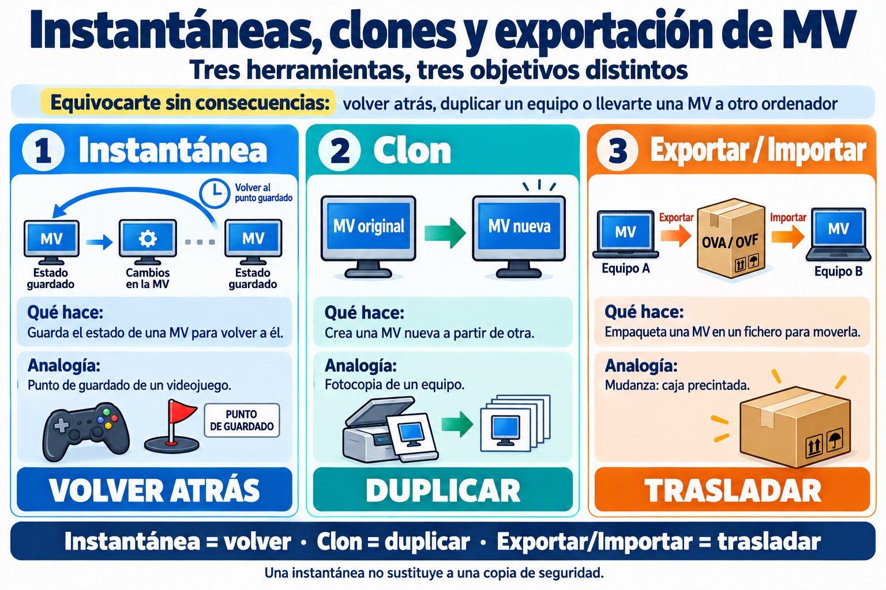
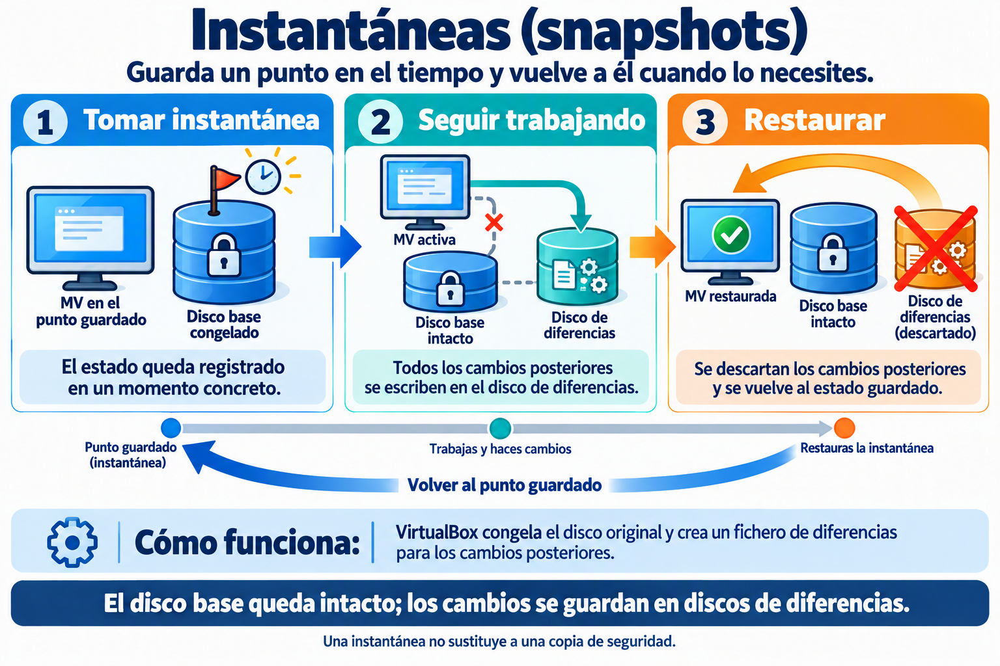

Instantáneas, clones y exportación de MV
Una de las grandes ventajas de virtualizar es que puedes equivocarte sin consecuencias: volver atrás, duplicar un equipo en minutos o llevarte una MV a otro ordenador. VirtualBox ofrece tres herramientas para ello, y confundirlas es un clásico:
| Herramienta | Qué hace | Analogía |
|---|---|---|
| Instantánea | Guarda el estado de una MV para volver a él | Punto de guardado de un videojuego |
| Clon | Crea una MV nueva a partir de otra | Fotocopia de un equipo |
| Exportar/Importar | Empaqueta una MV en un fichero para moverla | Mudanza: caja precintada |


Instantáneas (snapshots)
Una instantánea registra el estado de la MV en un momento concreto. Después puedes restaurarla y volver exactamente a ese punto.
Cómo funciona
Al tomar una instantánea, VirtualBox congela el disco original y crea un fichero de diferencias donde van todos los cambios posteriores. Restaurar es descartar esas diferencias.


Si la MV está encendida al tomarla, también se guarda el contenido de la RAM, por lo que al restaurar vuelves al instante con los programas abiertos.
Operaciones
| Operación | Efecto |
|---|---|
| Tomar | Guarda el estado actual |
| Restaurar | Vuelve al estado guardado y descarta lo hecho desde entonces |
| Eliminar | Borra el punto de restauración y fusiona sus cambios con el siguiente. No deshace nada |
Eliminar no es deshacer
Un error muy común: borrar una instantánea no devuelve la MV a ese estado. Solo elimina el punto de guardado. Para volver atrás hay que restaurar.
Restaurar pierde el trabajo posterior
Al restaurar, VirtualBox ofrece guardar antes una instantánea del estado actual. Si dices que no, todo lo hecho desde la instantánea se pierde.
Buenas prácticas
- Toma una instantánea antes de cambios arriesgados: instalar software dudoso, promover un controlador de dominio, tocar el registro.
- Pon nombres y descripciones claros:
W11 limpio + Guest Additions, noInstantánea 3. - No acumules cadenas largas: ocupan disco y ralentizan la MV.
- Una instantánea no es una copia de seguridad. Depende del disco base: si se pierde o se corrompe, se pierde todo.
Para el proyecto
Haz una instantánea al terminar cada UD del bloque Windows (instalación limpia, dominio creado, usuarios cargados...). Si algo se rompe, recuperas el punto anterior en segundos.
Clones
Un clon es una MV nueva e independiente a partir de una existente. Sirve para montar rápido varios clientes iguales a partir de una plantilla.
Tipos de clon
| Tipo | Cómo es | Ventaja | Inconveniente |
|---|---|---|---|
| Completo | Copia de todos los discos | Totalmente independiente | Ocupa más espacio y tarda más |
| Enlazado | Comparte el disco base con la original (solo guarda diferencias) | Rápido y ocupa muy poco | Depende de la MV original: si la borras o mueves, deja de funcionar |
En el aula, con poco espacio, el clon enlazado es tentador; para el proyecto es más seguro el completo.
Política de direcciones MAC
Al clonar, VirtualBox pregunta qué hacer con las MAC:
- Generar nuevas MAC de todas las tarjetas (lo habitual): evita conflictos en la red.
- Mantener la MAC (solo si sabes lo que haces): dos equipos con la misma MAC en la misma red provocan fallos extraños.
El problema de la identidad duplicada
Clonar copia todo, incluida la identidad del sistema. Dos máquinas idénticas en una red pueden dar problemas graves, y en un dominio de Active Directory son un desastre.
| Sistema | Qué se duplica | Qué hacer |
|---|---|---|
| Windows | Nombre de equipo e identidad del sistema | Cambiar el nombre tras clonar; para plantillas reutilizables, generalizar con Sysprep |
| Linux | Nombre del equipo, machine-id, claves SSH del servidor |
Cambiar el nombre (hostnamectl set-hostname) y regenerar machine-id y claves SSH |
Clonar Windows para unirlo a un dominio
Dos equipos con el mismo nombre en un dominio entran en conflicto, y un clon de un equipo ya unido comparte además su cuenta de equipo con el original. Lo correcto es clonar antes de unir al dominio y cambiar el nombre del clon. Para plantillas que se van a reutilizar mucho, se generaliza con Sysprep.
Plantilla maestra
Prepara una MV "limpia" (SO instalado, Guest Additions, actualizaciones), tómale una instantánea y no la uses: clónala siempre. Así ahorras horas de instalación.
Exportar e importar (OVA/OVF)
Archivo → Exportar servicio virtualizado empaqueta la MV en un único fichero para llevarla a otro equipo o entregarla.
| Formato | Qué es |
|---|---|
| OVF | Estándar abierto: un descriptor XML más los discos por separado |
| OVA | Todo comprimido en un único fichero (el más cómodo) |
- Es compatible con otros hipervisores (VMware, por ejemplo), aunque conviene probarlo.
- El fichero es grande (decenas de GB en un Windows).
- Para importar: Archivo → Importar servicio virtualizado, y marca Reinicializar la dirección MAC si ya existe la original en tu red.
Caso de uso
Montas una MV con el servidor ya configurado y se la entregas al profesor en un .ova: la importa y la tiene idéntica a la tuya, sin repetir la instalación.
Línea de comandos: VBoxManage
Todo lo anterior se puede automatizar, y mucho más rápido si hay que gestionar muchas MV.
VBoxManage list vms # listar MV
VBoxManage snapshot "W11-Cliente" take "limpio" # tomar instantánea
VBoxManage snapshot "W11-Cliente" restore "limpio" # restaurar
VBoxManage clonevm "W11-Cliente" --name "W11-Cli2" --register # clonar
VBoxManage export "W11-Cliente" -o w11.ova # exportar
Sintaxis
En Windows, VBoxManage está en la carpeta de instalación de VirtualBox y puede no estar en el PATH. Las opciones pueden variar entre versiones: consulta VBoxManage --help.
Actividades en clase
Actividad 1: Instantánea y restauración
- Toma una instantánea de tu MV Windows 11 limpia, con nombre y descripción.
- Crea un fichero en el escritorio e instala algún programa.
- Restaura la instantánea. ¿Qué ha pasado con el fichero y el programa?
- Repite el proceso, pero ahora elimina la instantánea en lugar de restaurarla. ¿Qué ocurre ahora?
Solución
Al restaurar desaparecen el fichero y el programa (se descartan los cambios posteriores). Al eliminar la instantánea los cambios se conservan: solo se pierde el punto de restauración.
Actividad 2: Clon y exportación
- Crea un clon completo de tu MV con MAC nueva.
- Arranca ambos clones con red interna y comprueba nombre de equipo e IP. ¿Hay conflicto?
- Exporta una de las MV a
.ovay anota el tamaño del fichero.
Solución
Ambos clones tienen el mismo nombre de equipo, aunque las MAC distintas eviten conflictos de red; hay que renombrar uno. El tamaño del OVA depende de lo que haya en el disco, no del tamaño máximo del disco virtual.
Actividad 3: ¿Qué herramienta uso?
- Voy a probar un programa desconocido y quiero poder deshacerlo.
- Necesito 10 clientes iguales para una práctica.
- Quiero llevarme la MV a casa en un pendrive.
- Quiero una copia de seguridad segura de mi servidor.
Solución
- Instantánea. 2. Clon (completo o enlazado, a partir de una plantilla). 3. Exportar a OVA. 4. Exportar o copiar los ficheros de la MV a otro disco: una instantánea no sirve como copia de seguridad.
Cierre de la UD05
Con este apartado completas el bloque de virtualización. Ya sabes qué es y qué necesita (apartado 3), cómo crear una MV (4), cómo conectarla (5) y cómo protegerla y reutilizarla (6). Todo ello es la base de las UD06 a UD09, donde instalarás y configurarás Windows Server.
Resumen
- Instantánea: punto de guardado; restaurar descarta lo posterior; eliminar no deshace.
- Clon completo = independiente; enlazado = depende de la original.
- Al clonar hay que tratar la identidad (nombre, SID,
machine-id) y renovar MAC. - OVA/OVF sirve para mover o entregar MV; una instantánea no es una copia de seguridad.
VBoxManageautomatiza todo desde consola.